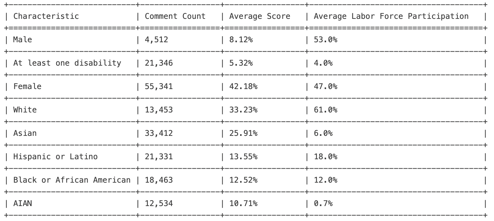
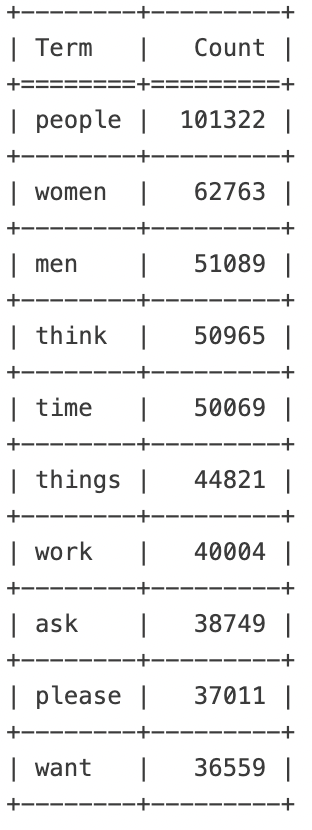
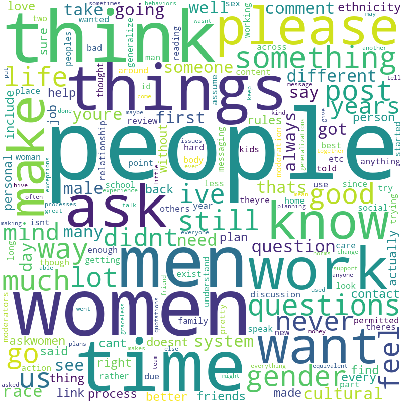
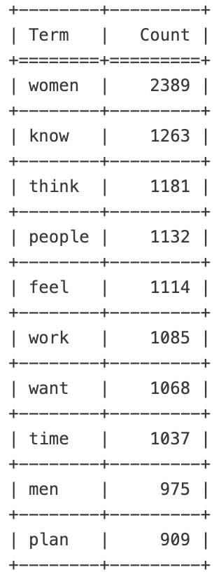
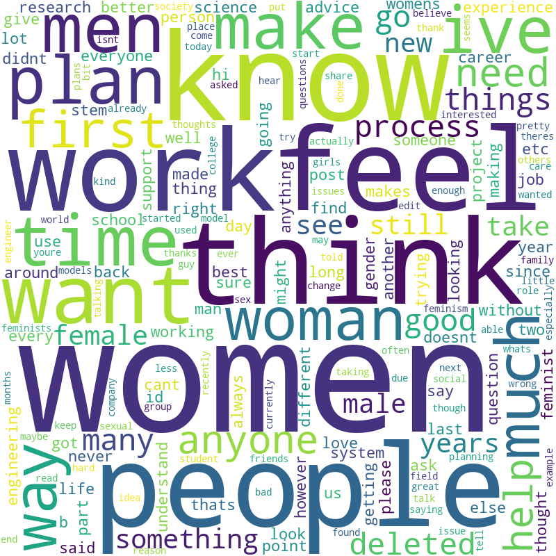
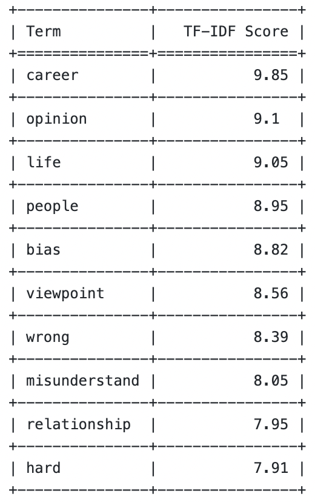
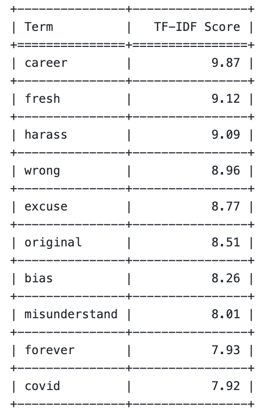
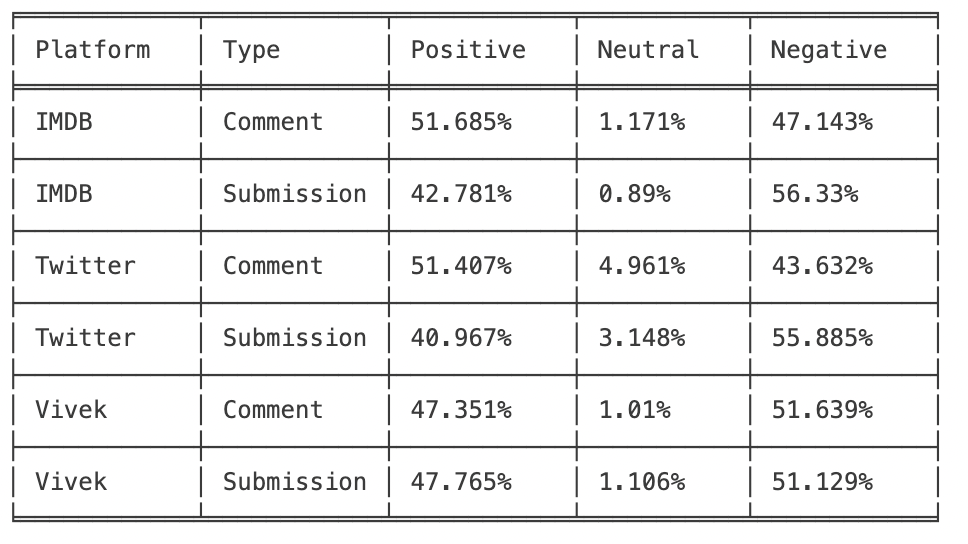

Natural Language Processing: Focusing on Women’s Issues in STEM
Executive Summary
In this section, our focus is on the discussion of keywords like STEM within topics such as xxstem, LadiesofScience, womenEngineers, AskWomen, AskFeminists, and Feminism to understand conversations taken place via comments and submissions.
We collected and preprocessed submissions and comments related to Women in STEM. The data preprocessing process includes cleaning the text, removing stop words, and tokenizing the data. We performed keyword analysis, TF-IDF score analysis, and sentiment analysis for comments and submissions data. Additionally, we visualize the results of our analysis through word clouds and line graphs depicting average distribution of texts in each subreddit for submissions and comments data.
We introduce external demographic data from the NSF website called "Diversity and STEM: Women, Minorities, and Persons with Disabilities 2023". This allows us to intergrate the results from the internet as well as from the real world and allows us to identify similarities between the focus of what is being said on the internet and what is happening in the real world.
External Data Analysis
We recently combined Reddit data with external demographic data to conduct a thorough analysis. Using this method, we were able to get more insight into how different demographic groups are represented and involved in STEM fields as they are discussed on Reddit platforms.
We gathered an extensive dataset from subreddits that addresses issues related to women in STEM. Demographic information about labor force participation and STEM field representation was provided by the external data. Important demographic categories like gender, race, and disability status are included in this data.
Table 1: STEM Representation and Engagement Analysis Table

The thorough investigation that combines external demographic data with Reddit discussions provides insight into the status of racial and gender representation in STEM fields. Even though women are underrepresented in the workforce, there is a lot of discussion about female participation in STEM on Reddit. Talks also touch on the diversity of races and ethnicities, emphasizing the need for greater inclusion, particularly for White and Asian people. The information suggests that there is less participation and representation of people with disabilities in STEM fields. All things considered, the analysis highlights the community’s support for diversity and inclusion The integration of demographic data and online discourse offers a viewpoint on public opinion and actual inequalities in STEM fields.
Data Pre-processing
We focused on preprocessing Reddit data, which involves a number of steps to organize and improve the text. To ensure uniformity and relevance, we started this process with text cleaning and normalization, which involved changing all of the text to lowercase, removing URLs, and removing non-alphabetic characters. To clean the text, we applied the PySpark User-Defined Function (UDF). After tokenizing it into individual words, non-contributory elements were filtered out by removing stop words, both common English stop words and others unique to our dataset. In order to fully comprehend the content of each submission, we merged words from the title and the selftext. These steps were essential for laying the groundwork for NLP analysis and improving the quality of insights.
Keyword Analysis and Dummy Variable Creation
We create corresponding dummy variables by identifying significant keywords associated with particular topics. Two main areas of interest—education and color (ethnicity)—were given specific keywords. For education, keywords related to “school,” “university,” and “education” were chosen. Keywords related to color included “black,” “hispanic,” “asian,” and “ethnicity.” These keywords were specifically selected to capture the essence of the discussions around these themes.
Calculating Word Frequencies along with Word Cloud for Comments and Submissions Data
Next we want to analyze the word frequency in Comments and Submissions in Reddit data. The statistics of high-frequency words can tell us most intuitively about the topics discussed and the tone of the speech. We use word cloud to visualize the word frequency statistics, which can most directly reflect the frequency of words.
Table 2.1: Most frequent terms - Comments Data

Figure 2.1: Word Cloud - Comments Data

In comments, “People” is the most frequent word, with 101,322 words. This may indicate that the discussion is mainly focused on social humanities. “Men” and “Women” also appear very frequently, with 62,763 and 51,089 occurrences respectively. The appearance of these high-frequency words is reasonable, after all, the topic itself is strongly related to people and gender. However, these high-frequency words do not contain words that can clearly convey emotions or feelings as we expected.
Table 2.2: Most frequent terms - Submissions Data

Figure 2.2: Word Cloud - Submissions Data

In submissions, “Women” is the most frequent word. This is in line with our expectations as we are exploring the topic of women ourselves. Other words that appear more frequently are “know”, “think”, “feel”, “plan”, “work”, “time”, etc. may indicate that the topic of these posts is some personal sharing or discussion about the future.
Average distribution of text lengths
Changes in average text length over time can often reflect the depth of user engagement in a topic. So we grouped them by subreddit, calculated the average length of submissions and comments over time, and then visualized them using a line graph.
Figure 3.1: Average Comments Length Per Subreddit
From the graph, we can clearly see that the average comment length of “xxstem” is the most volatile, and there is a clear peak in the average text length of “xxstem” topics around January 2022, but it quickly falls back to the previous trend. The average comment length of “AskWomen” is the highest during the time period of the data, and the average comment lengths of the rest of the subreddits do not change significantly in general. The general trend in “AskWomen” is indicative of users’ tendency to post longer comments.
Figure 3.2: Average Submissions Length Per Subreddit
“xxstem fluctuates more significantly in submissions, with a more pronounced peak in both July. And this period is more in line with the start of the school season as well as the job search season, which could mean that there is more active discussion of STEM during the job search or school start periods.” The average submission lengths for “Feminism,” “womenEngineers,” and “LadiesOfScience” fluctuated, but did not show a clear long-term upward or downward trend.
TF-IDF Score Analysis for Reddit Comments and Submissions
We went on to analyze the TF-IDF score, which is a common metric in Natural Language Processing tasks that helps us to be more aware of unique and important terms in the data. The results of the TF-IDF score are more reflective of the importance of the word than the word frequency analysis. The higher the score, the more important and unique the term is.
Table 4.1: TF-IDF Score for Comments Data

We can see that the word “career” has the highest score in the comments, which is in line with our expectation that the consideration of future career is an important aspect of the topic of stem. Secondly, “opinion” and “life” may also indicate that the comments focus on sharing experiences in one’s life as well as some life advice. In addition, the word “hard” may also indicate the attitude towards stem itself and related careers.
Table 4.2: TF-IDF Score for Submissions Data

The words “career”, “fresh”, “harass” and “wrong” had the highest TF-IDF scores in the submissions. This probably reflects the fact that submission’s focus is more on personal care and relationship issues.
Some terms like “wrong” and “misunderstand” appear in both comments and submissions with high TF-IDF scores, highlighting common themes of conversations in both types of content.
Sentiment Analysis of Reddit Comments and Submissions
In the sentiment analysis session, we used various models and pipelines in Spark NLP to analyze the sentiment of the textual content in the submissions and comments data, which gives us an idea of the sentiment tone of the users on the topic of women in STEM. We used three sentiment analysis models Vivekn, IMDB and Twitter to analyze the data in submissions and comments respectively.
Table 5.1: Sentiment Analysis of Submissions and Comments

IMDB: For the comments, the majority are positive (51.685%), with negative comments close behind (47.143%) and very few neutrals (1.171%).For the submissions, more negative (56.33%) than positive (42.781%), with an even smaller proportion of neutrals (0.89%).
Twitter: For the comments, similar to IMDB, the majority are positive (51.407%), with a significant amount of negative sentiment (43.632%) and a slightly larger neutral category (4.961%) than IMDB.The submissions display a higher negativity (55.885%) compared to positivity (40.967%), with a small neutral segment (3.148%).
Vivek: The comments shows a more balanced sentiment, with positives (47.351%) and negatives (51.639%) being quite close and neutrals (1.01%) slightly less than IMDB. On the other hand, the submissions have a balanced distribution between positive (47.765%) and negative (51.129%) sentiments with neutrals (1.106%) comparable to the comments.
Figure 5.1: Comparing the Models for Submissions and Comments Data
For both comments and submissions, Twitter and IMDB have a higher positivity rate than “Vivek”, but “Vivek” has a more balanced sentiment distribution. Submissions are generally more negative than comments across all platforms. Neutral sentiments are the least common across both types of content and all platforms.